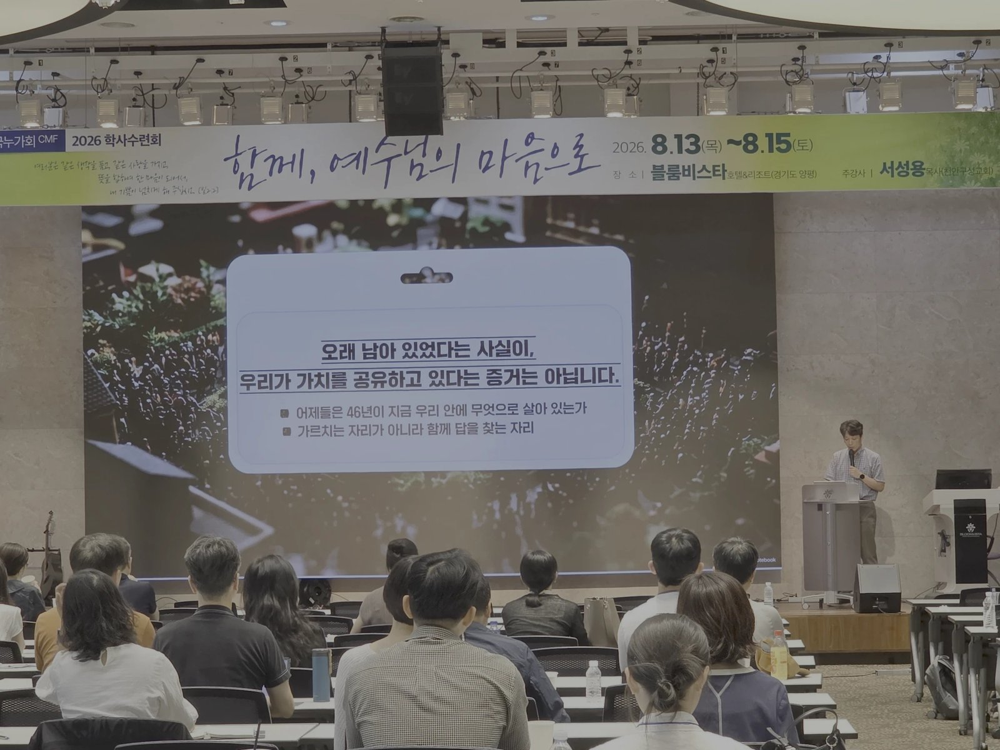

46회 CMF 학사수련회 전체특강(2) 「CMF 정신」(토 09:30) · 이상협 누가 · 본문 요6:66-69

SECTION 01
개요·핵심 논지
copy
전날 오후 전체특강(1)이 46년의 역사를 들려주었다면, 이 특강은 그 역사를 받아 한 문장을 청중 앞에 놓는다.
오래 남아 있었다는 사실이, 우리가 가치를 공유하고 있다는 증거는 아닙니다.
강사는 화자 위치를 첫머리에 못 박는다 — CMF 정신이 무엇인지 가르치려는 것이 아니라, 같은 자리에 앉은 사람으로서 함께 답을 찾는 30분. 청중은 청·장년 트랙 전원(졸업 중앙값 2009년, 약 17년차)이고, 강의 전체가 훈계가 아니라 자기 지목과 초대의 문법으로 설계되어 있다.
사람을 세운다는 것은 가르치는 것이 아니라 자리를 내주는 것입니다.
논지의 뼈대는 셋이다. ① 성경은 떠남을 사고가 아니라 상수로 놓는다(요 6:66) — 남는 것은 붙잡아서가 아니라 각자의 고백이어야 한다. ② 사람은 들어온 이유가 사라질 때 나간다 — 그래서 Value → People → Ministry의 순서가 공동체의 지속을 결정한다. ③ 그러나 변하지 않는 것은 가치이지 방식이 아니다 — 46년 동안 방식이 안 변한 것이 문제이며, 사람을 세운다는 것은 가르치는 것이 아니라 자리를 내주는 것이다(딤후 2:2·행 6장). 결론은 베드로의 대답이다 — 열광("여기가 최고입니다")이 아니라 분별("달리 갈 데가 없습니다"). 그리고 각자가 자기 언어로 한 문장을 쓰는 40초의 침묵으로 닫는다.
SECTION 02
구조·전개 (5부)
copy
| 부 | 내용 | 도달점 |
|---|---|---|
| 여는 말 | 어제의 46년 역사를 받는 첫 문장 · 화자 위치 선언 | "가르치는 자리가 아니라 함께 답을 찾는 자리" |
| 1부 네 개의 자리 | ①여기 앉은 사람 ②오지 않은 사람 ③교회와 누가회를 둘 다 하는 사람 ④교회는 열심인데 누가회는 갈피를 못 잡는 사람 | "여러분은 지금 몇 번이십니까. 작년에는 몇 번이셨습니까" |
| 2부 떠남은 예외가 아닙니다 | 요 6:66-67 · VPM · 가치/방식 · "사람이라도 잘 주었습니까" · 딤후 2:2 · 행 6장 · 슥 4:6 | 가치가 사람을 모으고 사람이 사역을 이룬다 |
| 3부 교회가 있는데 왜 누가회입니까 | 정체성 문장의 네 글자 "의료사회에서" · 교회가 답하지 않는 다섯 질문 | 직업적 거듭남 — 같은 현장을 아는 사람들 사이에서만 배워진다 |
| 4부 우리 가치를 다시 읽습니다 | 가치 vs 관성 · 사명선언문(성장·변화·섬김·하나님 나라) · 핵심가치 5 × 우리 세대의 질문 | 아는 것과 사는 것 사이의 거리를 확인 |
| 5부 그럼에도 남아 있음 | 자기 불만의 정직(거버넌스) · 베드로의 분별 · "떠나셔도 됩니다" · 40초 침묵 | "말할 수 없다면 그것은 정신이 아니라 관성입니다" |
★ KEY INSIGHT
핵심 개념·주장 ↔ 근거
copy
★ KEY INSIGHT
네 개의 자리 — 질문의 대상을 바꾸다
copy
"우리는 왜 여기 있는가"를 여기 앉은 사람에게만 물으면 자기 축하로 끝난다. 강사는 네 자리를 펼치고 — 각 자리의 진짜 질문(나는 왜 아직 여기 있는가 / 굳이 갈 이유를 못 찾았다 / 시간도 몸도 하나인데 어디까지 / 교회에서 이미 하는데 누가회는 왜) — "제가 이 네 자리를 다 지나왔습니다"로 닫는다. ①번이 ②③④번에게 설명하는 자리가 아님을 선언하는 장치이자, 청중이 판정의 자리가 아님을 알고 안심하는 지점이다.
SECTION 05
떠남은 상수다 — 붙잡지 않으신 예수
copy
붙잡아서 남긴 사람은, 붙잡는 손이 없어지면 갑니다.
기적을 눈으로 본 제자들 중 많은 사람이 떠났다(요 6:66). 우리는 사람이 떠나면 사고·관리 실패로 읽지만 성경은 떠남을 상수로 놓는다. 더 놀라운 것은 예수의 반응이다 — "너희도 가려느냐"(6:67). 붙잡지 않으셨다. 설득도, 죄책감도 없다. 남는 것이 각자의 고백이어야 했기 때문이다. "붙잡아서 남긴 사람은, 붙잡는 손이 없어지면 갑니다." 이 문장은 뒤의 실패담에서 회수된다.
SECTION 06
VPM — 들어온 이유가 나가는 이유를 결정한다
copy
사람이 좋아서 온 사람은 그 사람이 나가면 떠나고, 사역이 재미있어서 온 사람은 그 일이 끝나면 떠나고, 분위기 때문에 온 사람은 분위기가 변하면 떠난다. 가치에 동의해서 온 사람만 가치가 바뀌지 않는 한 남는다. 그래서 순서가 나온다 — 💎 Value(가장 먼저) → 👥 People(사역보다 소중하다) → ✝️ Ministry(성령께서 이루신다).
가치가 사람보다 먼저인 이유는 셋이다. 첫째, 충돌의 시점에 드러난다 — 평소에는 사람과 가치가 부딪히지 않지만, 갈릴 때 무엇을 따르는지가 내 안의 순서를 보여준다(행 5:29 "사람보다 하나님께 순종하는 것이 마땅하니라" — 사람을 버리라는 말이 아니라 갈렸을 때의 기준). 둘째, 20년이 지나면 사람은 반드시 바뀐다 — 회장도 간사도 동기도. 사람에 매인 소속은 사람이 바뀔 때마다 흔들린다. 20년, 30년 버틴 이들이 남았다면 바뀌지 않은 무엇이 있었던 것이다. 셋째, 가치가 없으면 상처가 곧 이탈이 된다 — 어떤 사람이 싫어서 그만두면 그 사람은 잃는 게 없고 내가 공동체를 잃는다. 요약: "사람은 함께 가는 이고, 가치는 어디로 가는지입니다."
SECTION 07
안전장치 — 변하지 않는 것은 가치이지 방식이 아니다 ★
copy
강의 전체가 "우리가 지켜온 것을 그대로 두라"로 전유되는 것을 막는 핵심 장치다.
| 변하지 않는 것 | 반드시 변해야 하는 것 |
|---|---|
| 복음을 증거한다 | 어떻게 증거할 것인가 |
| 하나님의 사람을 세운다 | 누가 누구를 세우는가 |
| 공동체로 살아간다 | 어떤 모양의 공동체인가 |
| 약한 자를 섬긴다 | 지금 누가 약한 자인가 |
| 생명을 존중한다 | 어떤 생명 문제가 앞에 있는가 |
왼쪽 다섯 줄은 CMF 핵심가치 그대로다. "왼쪽은 46년 동안 안 변했습니다. 오른쪽은 46년 동안 안 변한 게 문제입니다." 같은 가치를 같은 방식으로 하겠다는 것은 가치를 지키는 것이 아니라 방식을 지키는 것이다. 그리고 경고 — "우리가 지켜온 것"이라는 말이 "우리가 계속 쥐고 있겠다"는 말로 쓰이는 순간, 가치는 기득권의 언어가 된다. 반드시 "저부터 조심해야 합니다"가 따라붙는다.
SECTION 08
People — "사람이라도 잘 주었습니까"
copy
가치가 먼저라는 말은 사람이 덜 중요하다는 뜻이 아니다. 사역이 사람을 앞서면 일하다 싸우고, "일은 잘 돌아갔는데 사람이 없습니다"가 된다 — 위원회 하나 맡고 소진되어 사라진 사람은 학생 이야기가 아니라 지금 우리의 이야기다. 그리고 더 아픈 질문. "가치를 주지 못했다면 사람이라도 잘 주었어야 했습니다. 그런데 혹시 우리는, 사람에게 질리게 해서 떠나보내지는 않았습니까." 오지 않는 이들을 "가치를 몰라서"라고 설명하는 것이 얼마나 편한지를 짚는다.
여기서 추상론이 아니라 직접 들은 말이 증거로 나온다. 젊은 누가 후배들에게 정기모임에 왜 나오지 않느냐 물었더니 — "CMF는 좋은데, 모임이 힘들어요." 가치가 싫다는 게 아니다. 더 들어보면 사람과 방식이 사실 하나였다 — 그 사람이 미운 게 아니라 그 사람이 고수하는 방식(늘 같은 순서의 회의, 늘 같은 사람의 발언, 이미 나 있는 결정)이 힘든 것이다. "꼰대들의 방식에 계속 맞춰서 나오는 건 어려운 일입니다. 그리고 저부터 그 방식을 지키고 있는 사람입니다." 방식이 힘들어서 못 온다는 것은 그들이 가치를 거부한 것이 아니라 우리가 방식을 안 바꿨다는 뜻 — 앞의 가치/방식 명제가 여기서 주장에서 증명으로 바뀐다.
| 우리가 준 것 | 결과 |
|---|---|
| 가치도 사람도 주었다 | 남는다 |
| 가치는 없었지만 사람은 좋았다 | 일단 붙어 있다 — 그러다 배운다 |
| 가치는 말했지만 사람에게 질리게 했다 | 떠난다 — 그리고 다시 안 온다 |
| 둘 다 못 주었다 | 애초에 오지 않는다 |
가장 뼈아픈 것은 세 번째다. 가치를 말하는 공동체가 사람에게 상처를 주면, 그 가치까지 불신하게 만든다.
자기 서사 두 편이 이 논지를 짊어진다. 실패담 — 보스 기질로 후배들을 동원했으나 그들은 가치가 아니라 나라는 사람 때문에 왔고, 내가 지쳐 떠나자 함께 떠났다. 가치 때문에 공동체를 하게 했어야 했는데 나만 따라오게 했다. 반대의 경험 — 공중보건의 시절 「인생의 십일조 운동」: 동기 열두 명과 공보의 시간을 하나님께 드리자며 섬으로 갔고, 약한 자를 섬기고 복음을 증거한다는 가치가 동기였기에 흩어진 뒤에도 각자의 삶에 의미로 남았다. 가치가 먼저였고 사람이 함께 갔다. 그래서 남았다.
덧붙여 "자리가 사람을 만든다"는 말에 대한 이견 — 라인홀드 니버(『도덕적 인간과 비도덕적 사회』)대로 개인적으로 도덕적인 사람도 비도덕적 구조 안에서는 비도덕적으로 행동할 수 있다. "저도 예외가 아닙니다." 그래서 자리만으로는 안 되고 성령의 역사와 공동체의 견제가 필요하다.
SECTION 09
전수가 목적이다 — 딤후 2:2의 네 세대 ★
copy
핵심가치 2번 "하나님의 사람을 세운다"에서 세운다는 게 무엇인가. 딤후 2:2 한 절에 네 세대가 들어 있다 — 바울(1대) → 디모데(2대) → 충성된 사람들(3대) → 또 다른 사람들(4대). 문장이 2대에서 끝나지 않는다는 것이 요점이다. 디모데가 잘 배우는 것이 목적이 아니라 재생산이 되는 데까지가 목적이다. 판정 기준이 뒤집힌다 — 아무리 잘 가르쳤어도 3·4대로 넘어가지 않았다면 완성되지 않은 것이고, 잘 배운 2대가 자리를 지키고 있는 것은 성공이 아니라 정체다. "46년은 몇 대입니까."
그래서 — "사람을 세운다는 것은 가르치는 것이 아니라 자리를 내주는 것입니다. 46년이 지났는데 여전히 같은 세대가 결정하고 있다면, 우리는 사람을 세운 것이 아니라 사람을 기다리게 한 것입니다." 그리고 즉시 자기를 피고석에 놓는다 — "저도 몇 해째 같은 자리에 있습니다. 내려놓아야 할 자리를 붙들고 있는 것은 아닌지, 저에게 먼저 묻습니다."
SECTION 10
행 6장 — 초대교회의 해법
copy
헬라파 과부들의 소외 제기(행 6:1)에 사도들이 한 것: 원망을 사실로 받아들였고("믿음이 부족하다"고 덮지 않았다), 구조를 바꿨고(일곱을 세움), 소외를 호소한 쪽에서 뽑았고(일곱이 모두 헬라식 이름), 사도는 기도와 말씀으로 물러섰다. 결과는 부흥이다(행 6:7). 가치(복음과 구제)는 그대로였고, 바뀐 것은 방식과 사람이었다 — 그리고 바로 그때 공동체가 자랐다. 우리 안의 목소리(직능이 다른 이들, 젊은 세대, 간사들)를 가치 부족으로 읽을 것인지 구조를 바꾸라는 신호로 읽을 것인지 — 그 판단이 다음 46년을 결정한다.
SECTION 11
Ministry — 성령께서 이루신다
copy
사역은 내가 열심히 일하는 것이 아니라 성령께서 하시는 일에 내가 참여하는 것이다. 근거는 성전 재건이 막힌 스룹바벨에게 주신 말씀(슥 4:6 "힘으로 되지 아니하며 능력으로 되지 아니하고 오직 나의 영으로") — 맥락 자체가 일이 안 풀리는 사역 현장이다. 은사는 여러 가지나 성령은 같으므로(고전 12:4-7), 의사·치과의사·한의사·간호사·간사의 사역은 누가 더 많이 했느냐가 아니라 각자의 은사가 제자리에 있느냐의 문제다. 순서를 거꾸로 하면(M→P→V) 일이 사람을 연료로 태우고, 연료가 떨어지면 가치를 말할 사람조차 남지 않는다.
SECTION 12
3부 — 핵심은 네 글자, "의료사회에서"
copy
③④번 자리의 부담은 엄살이 아니라 사실이므로 "둘 다 열심히 하십시오"는 답이 아니다. 답은 정체성 문장에 이미 있다 — 한국누가회는 "의료사회에서" 예수 그리스도의 주되심을 인정하는 공동체. 교회는 삶 전체를 다루고 누가회는 의료사회를 다루며, 서로 대신하지 못한다. 교회가 답하지 않는 — 답할 자료가 없는 — 질문들: 성과와 수익 압박 앞에서 어디까지 물러설 것인가, 동료의 잘못을 보았을 때 무엇을 할 것인가, 환자와 보호자에게 어디까지 말할 것인가, 사람이 사람으로 보이지 않을 만큼 지쳤을 때 어떻게 할 것인가, 임종을 지키는 자리에서 무엇을 말할 것인가. 직능은 달라도 현장은 같다. 강사는 이것을 직업적 거듭남이라 부른다 — 영적으로 거듭났다면 이제 직업적으로 거듭나야 하며, 그것은 같은 현장을 아는 사람들 사이에서만 배워진다.
SECTION 13
4부 — 스피릿은 느낌이 아니다
copy
"뭔가 좋아요, 사람들이 좋아요"에서 멈추면 그것은 가치가 아니라 관성이다. 스피릿은 느낌이 아니라 목표와 방향과 가치다. 가치로 남는 공동체는 자기 언어로 말할 수 있고, 새로 온 사람에게 무엇을 주는지 알고, 갈등을 가치로 판단하고, 결정에 기준이 있다 — 관성으로 남는 공동체는 결정이 필요할 때마다 흔들린다(이 줄이 5부의 거버넌스 고백을 미리 깐다).
사명선언문의 네 단어(성장·변화·섬김·하나님 나라) 중 지난 1년 실제로 한 것에 표시하게 하고, 핵심가치 다섯에 우리 세대의 질문을 하나씩 단다:
| 핵심가치 | 우리 세대의 질문 |
|---|---|
| 1️⃣ 복음을 증거한다 | 10년, 20년 일한 그 자리에서 내가 그리스도인인 걸 아는 동료가 몇 명인가 |
| 2️⃣ 하나님의 사람을 세운다 | 지난 1년 이름을 부르며 세운 후배가 있는가 · 내가 맡은 자리 중 후배가 할 수 있는 자리는 몇 개인가 |
| 3️⃣ 공동체로 살아간다 | 직능이 다른 누가와 마지막으로 진지하게 이야기한 것이 언제인가 — 세상은 직능끼리 싸우는데 여기서는 함께 앉아 있다. 이게 얼마나 드문 일인지 우리는 잊고 있다 |
| 4️⃣ 약한 자를 섬긴다 | 내 의료현장에서 가장 약한 사람은 누구인가(동료일 수도 있다). 나는 그 사람을 알고 있는가 |
| 5️⃣ 생명을 존중한다 | 최근 1년 내가 마주한 생명윤리적 결정은 무엇이었고, 무엇을 근거로 판단했는가 |
체크가 적다고 부끄러워할 일이 아니다 — 다만 그것이 지금 서 있는 자리다. 아는 것과 사는 것 사이의 거리를 확인하는 것이 오늘 할 일의 전부다.
SECTION 14
5부 — 분별로 남는다
copy
남아 있는 이유를 말하려면 떠날 이유부터 정직해야 한다. "저는 불만이 많습니다" — 중앙이사로, 학사학원사역부에서, 선교부에서 일하며 의사결정 구조에 대한 고민(직책은 자기 것만 말한다). 4부를 지나온 지금 그 불만의 정체가 보인다 — 구조가 흔들리는 것은 공유된 가치가 없기 때문이고, 가치가 공유되지 않으면 가치라는 말이 소수의 결정을 정당화하는 도구가 된다. 상세는 발행글 「거버넌스 — 청지기의 프로세스, 공의회의 분별」 QR로 넘기고 강단에서는 한 문장으로만.
떠나셔도 됩니다. 주님만 안 떠나시면 됩니다.
그리고 본문의 결말. "너희도 가려느냐"에 베드로는 "여기가 최고입니다"라고 하지 않았다 — "주여 영생의 말씀이 계시매 우리가 뉘게로 가오리이까"(요 6:68). 열광이 아니라 분별이다. 강사의 대답도 같은 문법이다: CMF가 완벽해서 남은 것이 아니라, 의료사회를 기독교적으로 변화시킬 다른 공동체를 아직 찾지 못했다. "떠나셔도 됩니다. 주님만 안 떠나시면 됩니다. 다만 떠나기 전에 한 번은 물으셔야 합니다 — 대안이 있는 것인가, 아니면 그냥 지친 것인가."
말할 수 없다면 그것은 정신이 아니라 관성입니다.
마무리는 40초의 침묵이다. 가이드북 노트 면에 "내가 아직 CMF에 남아 있는 이유: ______" 한 문장을 쓰게 하고 강사는 아무 말도 하지 않는다. "말할 수 없다면 그것은 정신이 아니라 관성입니다. 정신은 문서에 있지 않고, 각자가 자기 언어로 말할 수 있을 때만 살아 있습니다." 46년의 역사는 이렇게 남기로 한 사람들이 한 해씩 쌓은 결과 — 역사는 결단의 누적이지 전통의 관성이 아니다.
마지막 문장은 다음 순서인 말씀 3 「예수 대 율법」(빌 3장)으로 놓은 다리다 — "남아 있음이 의무가 되면 율법입니다. 남아 있음이 기쁨일 때만 정신입니다." 그리고 이 다리는 실제로 받아졌다. 한 시간 뒤 설교자는 "저분이 제 설교를 미리 듣고 오셨나"라며 강단에 올랐고, 같은 진단 — 헌신이 의로 굳는 것에 대한 경계 — 을 율법주의와 복음의 어휘로 완성했다.
SECTION 15
종합
copy
이 특강은 수련회 사흘의 구조 안에서 세 번째 겹이다. 개회예배가 "무엇을 자랑하는가"(무엇을 붙들고 사는가)를 물었고(개회예배 나의자랑나의기쁨), 말씀 1이 그 자랑의 값(고난받는 특권)을 물었다면(말씀1 고난을받는특권), 이 특강은 같은 질문을 공동체의 층위로 옮긴다 — 무엇에 동의해서 남아 있는가. 개회예배의 "붙드는 것이 흔들리면 나도 흔들린다"와 이 특강의 "사람에 매인 소속은 사람이 바뀔 때마다 흔들린다"는 같은 문장의 개인판과 공동체판이다. 그리고 요 6:67에서 붙잡지 않으신 예수를 본문으로 삼았기에, "떠나셔도 됩니다"라는 파격이 수사가 아니라 본문에 대한 순종이 된다.
강의사적으로는 CMF 스피릿 강의 계보의 학사판 개정이다 — VPM 철학(CMF VPM철학)과 정체성·사명·가치 문서(한국누가회 정체성사명가치)를 뼈대로 쓰되, 학생 청중용 "어떤 누가로 살 것인가"가 아니라 17년차 청중의 "왜 아직 여기 있는가, 무엇을 넘겼는가"로 질문을 옮겼다. 딤후 2:2의 네 세대와 행 6장의 구조 개혁이 새 축으로 들어온 것이 이 개정의 핵심이다.
🔗 강의에서 QR로 안내한 글입니다. 거버넌스 주제에 더 관심이 있는 분은 이 글을 꼭 읽어 주시기 바랍니다 — 거버넌스: 청지기의 프로세스, 공의회의 분별
교차 참조
- 46회 CMF학사수련회 — 수련회 허브. 사흘 전체를 "자랑 → 특권 → 가치"의 세 겹으로 읽는 틀.
- 말씀3 예수대율법 — 마지막 문장의 다리를 그대로 받은 다음 순서. 방식/가치 ↔ 율법주의/복음.
- CMF VPM철학 — Value·People·Ministry 순서론의 본진.
- 한국누가회 정체성사명가치 — 4부에서 다시 읽는 정체성 문장·사명선언문·핵심가치 5의 원문.
- 요6 — 붙잡지 않으신 예수(6:66-69), 베드로의 분별.
- 딤후2 · 행6 — 전수의 네 세대, 구조를 바꾼 초대교회.
원본
📖 원본: 강사 본인의 준비 문서 — 서술형 원고와 발표자 메모.